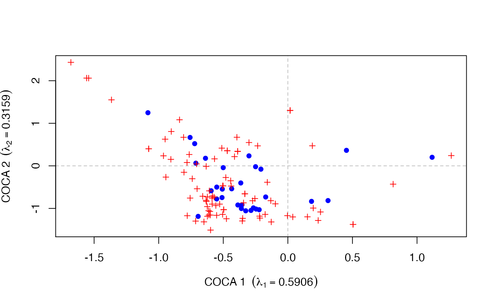

points.coca.RdDraws points on the current graphic device based on in
supplied coca model object.
# S3 method for coca points(x, display = c("sites", "species"), which = c("response", "predictor"), choices = c(1, 2), scaling = FALSE, select, ...)
| x | an object inheriting from class |
|---|---|
| display | character; one of the stated choices. Indicates which scores to use to draw points. |
| which | character; one of the stated choices. Indicates which of the response or predictor data sets is used to select scores from. |
| choices | The Co-CA axes to draw points for. |
| scaling | logical; should species scores in a symmetric Co-CA be rescaled? |
| select | Items to be displayed. This can either be a logical
vector which is |
| ... | Arguments passed to other methods |
The visual appearance of the plotted points can be controlled by
supplying appropriate graphical parameters via the ...
argument. See par for details.
Returns the plotted x and y coordinates as a matrix.
Gavin L. Simpson
plot methods; plot.predcoca and
plot.symcoca.
## symmetric CoCA data(beetles) data(plants) ## log transform the bettle data beetles <- log(beetles + 1) ## fit the model bp.sym <- coca(beetles ~ ., data = plants, method = "symmetric") #> #> Removed some species that contained no data in: beetles, plants ## draw a plot of the response scores plot(bp.sym, type = "none") points(bp.sym, display = "sites", col = "blue", pch = 16) points(bp.sym, display = "species", col = "red", pch = 3, cex = 0.8) 